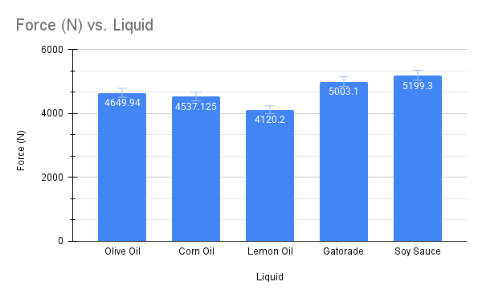
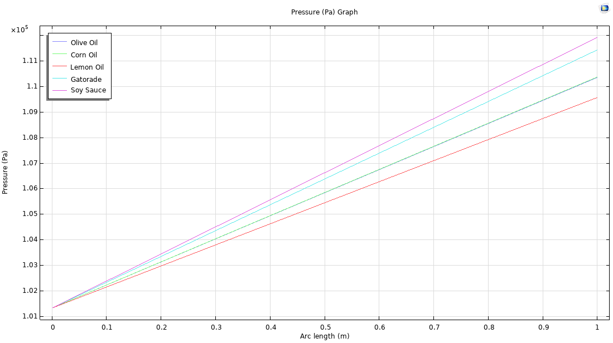

MEDFORD, MA
Raphael
Lemus Solis
Mechanical Engineering major, Physics minor at Tufts University.
I design, model, and build physical systems — from a motorized lift-robot to a sand-cast sundial — and like projects that move between CAD, the shop, and testing in the same week.
Spec Sheet
About
I'm a senior at Tufts University studying mechanical engineering with a physics minor. My coursework runs through thermal-fluid systems, materials and manufacturing, mechanics, and controls, and outside of class I've built everything from a load-lifting robot to a hand-fabricated sundial. In summer 2024 I spent a month at the University of Tübingen studying sustainability and AI policy while picking up German.
- Languages & culture
- Video games
- Space
- Reading
Projects
Coursework projects spanning controls, CAD, and manufacturing.
Car Robot
Electronics & Controls I
Designed and built a car-style robot able to lift varying loads off a table. Wrote the control logic that regulated motor speed and steering, then tested and debugged the electrical and control systems to improve reliability.
Desk Add-Ons
Engineering Design I
Designed an attachable, detachable desk cabinet built around a push-to-close mechanism, a ratchet system for effortless height adjustment, and a shopping-cart-style handle for mobility — starting from user-centered design research and ending in full SolidWorks models and drawings.
Sundial Coat Hanger
Materials & Manufacturing I
Fabricated a working sundial coat hanger using sand-casting, then built an FEA model to find the material's maximum tensile strength — carrying the project from concept to finished prototype inside a one-month deadline.
Experiments
Lab work from thermal-fluid systems coursework.
ME51 — Thermal Fluid Systems ▶
Lab 1 — Manometer Density Measurement ▶
WITH AMANDA
Using a U-tube manometer, Amanda and I measured the density of eight household liquids with nothing but hydrostatic pressure and a camera. We filled the manometer with water, ran a test liquid down one arm, then photographed the settled fluid and used MATLAB to convert the pixel height difference into a real measurement, solving for density from the pressure balance across the tube.
Before testing liquids, we checked the physics against a known case: blocking one arm at hydrostatic equilibrium produced a 1.5 mm shift and a 14.7 Pa pressure difference; tilting the tube and blocking it again pushed that to 18.9 cm and 1853 Pa — confirming the linear relationship between column height and pressure.
| Liquid | Measured (g/cm³) | Actual (g/cm³) | Error |
|---|---|---|---|
| Lemon oil | 0.840 | 0.840 | 0% |
| Corn oil | 0.925 | 0.922 | 0.33% |
| Olive oil | 0.948 | 0.920 | 3.04% |
| Gatorade | 1.02 | 1.03 | -0.97% |
| Milk | 0.989 | 1.02 | -3.04% |
| Hot sauce | 1.01 | 1.04 | -2.88% |
| Soy sauce | 1.06 | 1.08 | -1.85% |
| Orange juice | 0.99 | 1.05 | -5.71% |
Most results landed within a few percent of published densities. The largest misses — orange juice, milk, and hot sauce — came from liquids that wouldn't settle cleanly against the meniscus, whether from opacity, suspended particles, or surface tension. We also cross-checked the setup in COMSOL, modeling the force each liquid would exert on a 1 m tank wall with F = ρgh/2, and landed within 3% of the analytical result.


MTN1 — Force on Adhesive Tape (Scotch vs. Duct) ▶
This lab reused the manometer tube from Lab 1, but instead of leaving it open, I sealed one end with a strip of tape and measured how tall a column of water the tape's adhesive could hold before letting go — then converted that height into a hydrostatic force. Height was read the same way as before: a ruler in frame gave a pixel-to-cm calibration, and MATLAB converted a click-to-click pixel distance into a real measurement.

I ran three trials with scotch tape and one with duct tape, to see whether the type of tape — and how sticky it was — changed the result.


| Trial | Height (cm) | Force (N) |
|---|---|---|
| Scotch tape — Test 1 | 6.10 | — |
| Scotch tape — Test 2 | 4.76 | — |
| Scotch tape — Test 3 | 8.38 | — |
| Scotch tape — average | 6.41 | 0.018 |
| Duct tape | 5.02 | 0.014 |
For the COMSOL side of this one, a classmate, Ryan, helped me work through setting up the parameter sweep. The resulting force-vs-water-height curve came out linear, and the calculated 0.018 N for scotch tape lines up closely with the swept range — though COMSOL treats the sealed end as a rigid body, so it doesn't account for the tape's adhesion itself.

Results were noisier than Lab 1's — pixel-to-cm conversion was harder to pin down, camera angle could tilt between shots, and a couple of untested trials likely leaked water through small gaps in the tape. Even so, the pattern held: the three scotch-tape trials averaged a 6.41 cm column (0.018 N), duct tape held only 5.02 cm (0.014 N) — about a 22% difference. The takeaway was that adhesive type didn't change the underlying hydrostatic pressure, just how much of it each tape could actually hold back.
Lab 2 — Bernoulli Jet Trajectories ▶
This lab tested how far water shoots out of holes at different heights on a bottle, using Bernoulli's equation to predict exit velocity and basic ballistics to predict landing distance. Three assumptions made Bernoulli tractable here: the flow is incompressible, steady, and inviscid.
Both hole and bottle-top are open to atmosphere, so P₁ = P₂ and that term cancels. The bottle's cross-section is so much larger than the holes that, by continuity (A₁v₁ = A₂v₂), the velocity at the top is effectively zero. That leaves a clean relationship between exit velocity and the height of water above the hole:
| Height of hole | Exit velocity |
|---|---|
| 0.153 m | 1.111 m/s |
| 0.099 m | 1.514 m/s |
| 0.050 m | 1.804 m/s |
To predict how far each stream would land, I assumed the jet leaves perfectly horizontal (θ = 0), which reduces the fall time to t = √(2Δy/g) and gives a theoretical landing distance from the exit velocity alone.
| Height of hole | Experimental | Theoretical | % Error |
|---|---|---|---|
| 0.153 m | 0.30 m | 0.20 m | 33.3% |
| 0.099 m | 0.45 m | 0.21 m | 53.3% |
| 0.050 m | 0.64 m | 0.18 m | 71.9% |
The high error was the most interesting part. My best explanation: the water wasn't being replenished as it drained, so by the time each photo was taken the water level — and therefore the driving height — had already dropped well below h₀. A constantly-topped-off bottle would hold that height constant and should track the theory much more closely. Camera-angle drag, the bottle's slight curvature, and an unmodeled drag coefficient likely added further error. A follow-up test with a filled cup and a single hole gave a comparable 47% error, suggesting the issue is systematic rather than a one-off.
The COMSOL comparison told a cleaner story: treating the bottle as a rectangle with turbulent (k-ε) flow, the simulated exit velocities were within about 3–9% of the theoretical Bernoulli prediction — much closer than the physical experiment, since COMSOL doesn't suffer from a draining water level.
| Height of hole | Theoretical | COMSOL | % Error |
|---|---|---|---|
| 0.153 m | 1.111 m/s | 1.019 m/s | 9.08% |
| 0.099 m | 1.514 m/s | 1.401 m/s | 8.10% |
| 0.050 m | 1.804 m/s | 1.724 m/s | 2.88% |
We were also asked to think about vena contracta — the narrowest point of a jet just past the orifice, where velocity is greatest. Extending the exit holes slightly out from the bottle wall in COMSOL confirmed this: velocity peaked right where the stream first left the bottle, and (consistent with theory) the lowest hole — with the greatest driving height — produced both the fastest stream and the longest landing distance.
Lab 3 — Flow Visualization & PIV ▶
This lab aimed to visualize and quantify flow velocity around a custom object, using dye-based flow visualization and Particle Image Velocimetry (PIV) software. I laser-cut a six-piece acrylic "sparkle" shape on SolidWorks, epoxied it together, tied a string to it, and dragged it through a dye- or pepper-seeded water bath while filming from above.
Food coloring turned out to be a poor tracer: fully dissolved dye left no visible streamlines, powdered dye clumped instead of forming a clean line, and even pouring it fresh just ahead of the object only partly worked — usable streamlines appeared, along with visible vortices, but a lot of the coloring stayed inert rather than tracing the flow. Switching to black pepper as a tracer worked much better, and enabled quantitative PIV analysis (with an assist from openpiv in Python) once frame pairs were captured with enough contrast.
The resulting vector field was noisy at a glance — clumped pepper and inconsistent lighting didn't help — but filtering down to the curvature ("red") vectors revealed a coherent streamline pattern around the object, from which an average flow velocity could be extracted.
| Trial | Velocity | Re |
|---|---|---|
| Iteration 4 (dye) | 0.30 m/s | 30,000 |
| Iteration 3.1 (dye) | 0.15 m/s | 15,000 |
| Pepper (PIV) | 0.08 m/s | 8,000 |
All three trials landed well into the turbulent regime (Re > ~2,000–3,000). Since velocity is the only variable that changes Re here, reaching laminar or creeping flow with this setup would mean dragging the object at roughly 0.03 m/s or slower — slow enough that it would need a motor-driven pull rather than a hand-dragged string to hold steady.
COMSOL contour plots of the same 0.08 m/s flow in turbulent, laminar, and creeping regimes showed exactly the expected qualitative shift: turbulent flow swirled and expanded behind the object, laminar flow stayed mostly attached but rippled near the trailing edge, and creeping flow wrapped around the shape symmetrically with almost no wake — a clear visual confirmation that Reynolds number, not just speed, governs the character of the flow.
MTN2 — Drag Coefficient of a Four-Point Star ▶
Using the same "sparkle"/star shape from Lab 3, this project estimated the drag coefficient three independent ways — dimensional analysis, potential-flow theory, and a COMSOL simulation — and compared how each captured (or missed) real flow physics.
Dimensional analysis. With five governing variables and three fundamental dimensions, Buckingham Pi reduces the problem to two groups: C_d = f(1/Re). Since no drag-coefficient chart exists for a four-point star, I approximated it as a flat plate (sharp edges, large flat regions) at Re ≈ 1.6×10⁵ — solidly turbulent — reading a constant C_d ≈ 1.5 off the flat-plate chart. This assumption ignores curvature effects that would otherwise reduce drag.
Potential-flow analysis. A MATLAB source-panel method modeled inviscid flow around the star outline, giving a lower C_d ≈ 1.137. The drop from 1.5 makes sense: the star's angled faces smooth the pressure gradient at the leading and trailing edges relative to a flat plate — but a purely inviscid model still can't capture real separation or viscous drag, so it understates true drag.
COMSOL. A full Navier–Stokes simulation with the actual curved geometry gave the most physically grounded estimate, C_d ≈ 0.944, computed from the momentum deficit between inlet and outlet flow across the simulation domain. The streamlines showed clear separation and recirculation behind the star's tips, but the curvature promoted some pressure recovery, pulling the coefficient down relative to the sharper-edged analytical estimates.
| Method | C_d |
|---|---|
| Dimensional analysis (flat-plate approx.) | 1.5 |
| Potential flow (inviscid) | 1.137 |
| COMSOL (viscous, turbulent) | 0.944 |
The three estimates form a consistent, decreasing trend as each model accounts for more real physics — geometry, then pressure distribution, then viscosity and separation. Lab 3's PIV data (Re ≈ 8,000, with visible vortices and chaotic particle motion) reinforces the story: potential flow predicts smooth, symmetric, nearly drag-free streamlines, while the real flow showed early separation at the star's sharp tips — the actual source of most of the drag, and the reason the physical estimate sits well above the inviscid prediction.
Lab 4 — Window Heat Loss ▶
This lab estimated heat loss through a dorm window three ways: direct thermistor measurement, an analytical resistance-network calculation, and a COMSOL simulation. Two thermistors — one indoor, one outdoor — were wired to a KB2040 microcontroller running MicroPython, using the Steinhart–Hart equation to convert resistance readings into temperature.
| Test | Outdoor avg. | Indoor avg. | ΔT |
|---|---|---|---|
| Night (22:50–23:05) | 6.28 °C | 18.07 °C | 11.79 °C |
| Morning | 6.41 °C | 15.39 °C | 8.98 °C |
With h_in = 4 W/m²K (still indoor air), h_out = 25 W/m²K (moderate wind), and single-pane glass (k = 0.96 W/mK, 4 mm thick), R_total came out to 0.294 m²K/W — dominated almost entirely by the indoor convective resistance, which is why improving indoor air circulation matters more than outdoor insulation for a window like this.
Radiation turned out to matter more than expected: using the night-test temperatures, q_rad ≈ 56 W/m² against q_conv ≈ 40.1 W/m² — radiation was actually the larger loss term. Folding an effective radiative coefficient (h_rad ≈ 5 W/m²K) into h_in dropped R_total to 0.155 m²K/W and raised the predicted flux to 76.1 W/m².
| Source | q (W/m²) |
|---|---|
| Analytical (night, with radiation) | 76.1 |
| COMSOL simulation | 76.554 |
| Analytical (morning) | 57.9 |
The night-test analytical value and the COMSOL result agreed almost exactly, suggesting the assumed boundary conditions closely matched actual nighttime steady-state behavior. The morning value came in lower, which tracks — daytime solar heating, shifting wind, and a rising outdoor temperature all reduce net heat loss and pull conditions away from what COMSOL assumed.
Scaling the nighttime flux to a full night (U = 6.45 W/m²K over 12 hours) gave a total estimated loss of about 0.91 kWh through this one window — though that assumes a constant ΔT, which held much better in the morning data (14% variation) than overnight (38% variation, likely from the heating system cycling).
The thermistors themselves introduced real limitations: nonlinear resistance-to-temperature behavior (relying on the simplified Steinhart–Hart form), slight self-heating from the measurement current, sensitivity to how tightly each sensor was taped to its surface, and ordinary unit-to-unit drift. None of these invalidate the results, but they explain why the measurements don't match the models perfectly.
Lab 5 — Cooling Curve of a Water Cup ▶
This lab modeled the cooling rate of a hot liquid (water standing in for coffee) using the lumped-capacitance assumption, then checked that assumption experimentally, analytically, and in COMSOL. Three thermistors — top-center, top-side, and bottom-side — tracked temperature at once, positioned to catch any top-to-bottom or center-to-wall gradient that would violate the "lumped" (single-node) assumption.
All three sensors tracked each other within a few tenths of a degree throughout the cooldown, which was the key experimental result: the water really does behave as a single thermal node, despite a computed Biot number of 0.2 — technically outside the usual Bi < 0.1 rule of thumb for a valid lumped analysis.
Fitting the exponential decay of θ(t) = T − T_∞ gave an effective convective coefficient of h ≈ 24.3 W/m²K and an effective resistance R ≈ 1.87 K/W directly from the data — useful as a benchmark for the analytical and numerical models that followed.
A resistance-network model of the cup (treating it as a truncated cone, water-to-cup-to-air on the sides, ignoring the insulated bottom) with textbook convection values (h_water = 500, h_air = 10 W/m²K) gave R_total = 4.76 K/W — more than double the experimental value. A MATLAB Euler's-method simulation using these same assumptions badly under-predicted the cooling rate, and adding a radiation term barely changed the result.
The fix turned out to be h_air itself: raising it to 25 W/m²K (from the textbook 10) brought R_total down to 2.03 K/W, much closer to experiment — implying the "extra" cooling in the real system came from effects the simple model doesn't capture (air-gap conduction, table contact, minor water disturbance) all folding into an inflated effective h.
COMSOL runs told the same story in three steps: with h = 5 W/m²K on both water and air surfaces, the simulated cup stalled at 313 K — 3.3% off in temperature but over 1,300% too slow in time. Raising h to 50 W/m²K everywhere got temperature within 0.3% and time within 26%. Splitting the walls (70 W/m²K) from the top surface (50 W/m²K) tightened both errors to under 1%.
MTN3 — Heat Transfer Through a Running Jacket ▶
This project measured heat transfer through a jacket while standing still versus running, comparing thermistor data against an analytical thermal-resistance model and a matching COMSOL simulation — then used the same run to estimate aerodynamic drag on a moving person.
With T_in = 35 °C (skin/clothing interface), T_∞ = 0.56 °C, jacket thickness L = 5 mm and k = 0.040 W/mK, and outside convection rising from h = 8 W/m²K (still) to 30 W/m²K (running), the model predicted heat flux would increase while running:
| Condition | Analytical | COMSOL | Experimental |
|---|---|---|---|
| Standing still | 76.5 W/m² | 76.5 W/m² | 214.4 W/m² |
| Running | 96.1 W/m² | 96.1 W/m² | 188 W/m² |
COMSOL validated the analytical model almost exactly in both cases — but the thermistor data told a different story on two fronts: measured flux was far higher than either model predicted, and it dropped while running instead of rising. The outer surface did cool more while running, matching the model's qualitative trend, but running clearly changes more than just h_out — likely air gaps, insulation contact, and exposure shifting all at once, which a single-layer 1-D model can't separate out.
Using the run itself (≈160.9 m covered in 55.2 s, or 2.9 m/s) as a stand-in for wind speed on the runner's body gave a drag-force estimate:
A few newtons is the right order of magnitude for aerodynamic drag at an easy running pace, and since drag scales with V², it should grow quickly at higher speeds. Modeling the body as a rectangular bluff body, the flow separates sharply at the front corners, producing the low-pressure wake that accounts for most of that drag.
Experience & Research
BEST Scholar Peer Mentor
Tufts University, Medford, MA
- Mentored 12 incoming pre-matriculated students through an academic and social transition program.
- Organized events and guest presentations, and ran hands-on engineering workshops to help students explore majors.
- Built an inclusive, growth-oriented environment for students from diverse backgrounds.
IDEA Lab — Member
Tufts University, Medford, MA
- Helped stand up a new research group studying transboundary water-basin pollution.
- Took part in strategy discussions to define the group's goals, priorities, and action plans.
- Drafted interview questions to guide data collection and keep it relevant and accurate.
Library Assistant
Parlin Memorial Library, Everett, MA
- Ran library programs for children ages 5–10.
- Helped patrons find resources and services, and kept materials organized on the floor.
- Checked materials in and out through the library management system.
Skills
Programming
- MATLAB Certified
- Python
- Java
CAD & Simulation
- SolidWorks
- SolidWorks Simulation
- Onshape
Fabrication
- 3D printing
- Laser cutting
- Sand casting
Languages
- English Fluent
- Spanish Native
- German A1
Education
Tufts University
EXPECTED MAY 2027B.S. Mechanical Engineering, Physics Minor — GPA 3.54, Medford, MA
University of Tübingen
MAY–JUN 2024Tufts Abroad Program — Tübingen, Germany